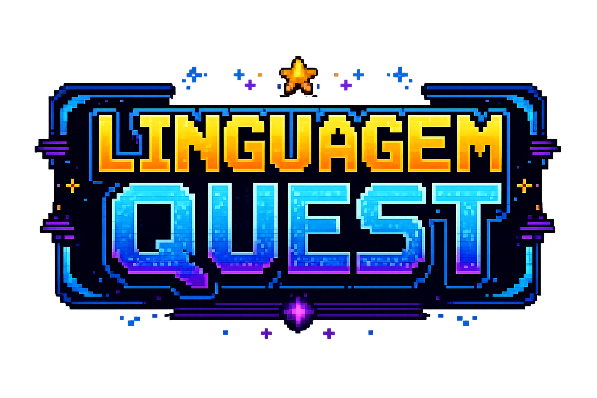

Dia da Linguagem JOPS
Este jogo foi desenvolvido para o Dia da Linguagem JOPS
Este jogo foi desenvolvido por Davi Moreira Gonzaga, aluno do Curso Técnico em Informática da E.E.E.P. Professor José Osmar Plácido da Silva. — 2024-2026 — e Desenvolvedor Front-End em Formação.
Abraço fraternal à todos os Professores e Mestres da área de Linguagens. Agradecimento especial ao Mestre Gilson por toda a confiança depositada!
Prepare-se para testar seus conhecimentos sobre linguagem, música, literatura e interpretação!
O projeto desse jogo está disponível no meu GitHub: moreiradv
Como jogar
- O jogador responderá perguntas de múltipla escolha.
- Algumas perguntas terão música ou áudio.
- Quando aparecer o botão “Tocar áudio”, o jogador deve ouvir antes de responder.
- Questões sem música terão 30 segundos de tempo; se o tempo acabar, a questão será anulada e o jogo avançará.
- Depois de responder, o jogo mostrará se a resposta está correta ou errada.
- Ao final, será exibida a pontuação e o desempenho.
Jogador
---
Pontuação
0
Acertos
0%
Resultado final
Fim de jogo!
Dia da Linguagem JOPS
Placar
Jogadores e pontuações
Modo professor
Para adicionar novas perguntas, edite o array questions no arquivo script.js. Os arquivos de música devem ser colocados na pasta assets/audio/musicas/.
Para usar uma música em uma pergunta, escreva audio: "assets/audio/musicas/nome-da-musica.mp3". Se a pergunta não tiver música, basta não colocar a propriedade audio.
1. Pergunta sem áudio
{
id: 9,
category: "Gramática",
question: "Qual alternativa apresenta um verbo?",
options: ["Casa", "Correr", "Azul", "Mesa"],
correctAnswer: "Correr",
explanation: "Correr indica uma ação."
}2. Pergunta com áudio
{
id: 10,
category: "Música",
question: "Qual instrumento se destaca no áudio?",
audio: "assets/audio/musicas/nome-da-musica.mp3",
options: ["Violão", "Flauta", "Bateria", "Piano"],
correctAnswer: "Violão",
explanation: "O violão aparece como instrumento principal."
}3. Pergunta estilo ENEM
{
id: 11,
category: "ENEM",
question: "No texto, a crítica social é construída por meio de...",
options: ["Ironia", "Rima", "Narrador personagem", "Linguagem técnica"],
correctAnswer: "Ironia",
explanation: "A ironia contrasta aparência e sentido real."
}4. Pergunta sobre música
{
id: 12,
category: "Estilos musicais",
question: "Qual estilo valoriza improviso, rima e ritmo falado?",
options: ["Rap", "Samba", "Bossa nova", "Forró"],
correctAnswer: "Rap",
explanation: "O rap usa flow, rima e expressão oral."
}